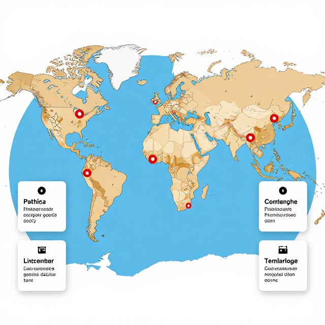

1.4-III｜國小 9–12 歲
水，夠嗎？
地球水循環的大挑戰
💧💧💧💧💧💧💧💧💧💧
💧💧💧💧💧💧💧💧💧💧
💧💧💧💧💧💧💧💧💧💧
💧💧💧💧💧💧💧💧💧💧
💧💧💧💧💧💧💧💧💧💧
💧💧💧💧💧💧💧💧💧💧
💧💧💧💧💧💧💧💧💧💧
💧💧💧💧💧💧💧💧💧💧
💧💧💧💧💧💧💧💧💧💧
💧💧💧💧💧💧💧
🧊🧊
🫧
💧 × 97 = 海水（不能喝）
🧊 × 2 = 冰川冰帽
🫧 × 0.5 = 可用淡水
100 滴水中，只剩半滴可以用！
起點數據
現在，全世界有超過 20 億人沒有安全的水喝
>20 億
人
缺乏安全飲用水
50%
全球人口
每年至少 1 個月嚴重缺水
70%
全球淡水
用於農業
70%
自然災害死亡
與水相關（洪水、乾旱）
🤔想一想：班上 30 個人，換算一下——大約有幾個人會沒有安全的水喝？你有什麼感覺？
世界地圖——紅色標示嚴重缺水地區
世界尺度分布圖

非洲部分、中東、印度北部、墨西哥——這些地方的人每天怎麼取水
活動一・步驟 1
臺灣的水：同時變得「更多」又「更少」？
豐水期（夏季）
雨一次下太多 ⛈️
短時強降雨增加 → 淹水、土石流風險上升 → 水庫裝不下
枯水期（冬春）
久久都不下雨 🏜️
2021 百年大旱：日月潭見底、學校停水、農田休耕
TCCIP 推估：臺灣未來豐水期流量增加、枯水期流量減少，「豐枯差異加大」——缺水和豪雨會同時變嚴重。
🤔想一想：停水那天你家怎麼度過？你覺得水不夠用的時候，最需要的是什麼？
資料來源：TCCIP 臺灣氣候變遷推估資訊平台
活動一・步驟 2
臺灣水的數字故事
臺灣月降雨量長條圖過去 vs 未來推估
比較圖
年雨量豐沛，但超過 70% 直接流入海——留不住是最大問題
🌊 海平面上升：格陵蘭 + 南極西側冰棚各融一半 → 海平面 +6 m → 臺灣 1,000+ km² 被淹沒（NCDR 推估）
🏗️ 沿海鹹化：過度抽取地下水 + 海水入侵 → 井水變鹹 → 飲用水問題（吐瓦魯同款）
資料來源：國家災害防救科技中心 NCDR
活動二・步驟 1
水在地球上的旅行：水循環
水循環示意圖
流程圖
太陽 → 蒸發 → 雲 → 降水 → 逕流 → 海洋 / 地下水
🌡️ 氣候變暖
→
熱空氣裝更多水蒸氣
→
雨更激烈 OR 更乾燥
→
該乾更乾、該濕更濕
過去 20 年陸地上的水每年下降約 1 公分；2000 年以來洪水災害增加 134%、乾旱頻率增加 29%。
活動二・步驟 2 ・實驗
海冰 vs 陸冰：哪一個融化會讓海平面升高？
A 杯：冰塊浮在水中（海冰）
融化後水位不變 ✅
冰塊原本就泡在水裡——融化前後，水的總體積沒有改變。北冰洋融冰不會直接升高海平面。
B 杯：冰塊放在石頭上（陸冰）
融化後水位升高 ⚠️
冰塊原本在「陸地上」，融化後水流進杯子，水面會升高。格陵蘭、南極冰蓋、高山冰川都是陸冰！
🧊 自己試試看：回家拿兩個透明杯子，一杯冰塊浮在水中、一杯冰塊放在小石頭上，記錄融化前後水位的變化！
🤔想一想：全球暖化讓陸冰融化 → 海平面上升 → 臺灣哪些地方會受影響？（看看臺灣地圖）
活動三
水變得更極端了
認識兩個受氣候變遷影響的真實家庭
活動三・步驟 1
A 家庭（尼泊爾山村） vs B 家庭（吐瓦魯小島）
🏔️ A 家庭：尼泊爾喜馬拉雅山村
靠冰川融水生活
冰川縮小 → 短期洪水暴漲 → 長期水源消失。他們正在種更多樹、挖蓄水池、改種耐旱作物。
🏝️ B 家庭：吐瓦魯太平洋小島
靠地下水 + 雨水生活
海水倒灌 → 井水變鹹 → 改靠雨水桶 + 淡化機。年輕人陸續移民紐西蘭尋找新家。
討論：這兩個家庭遇到的問題一樣嗎？都是氣候變遷，為什麼不同？
提示：地理位置不同 → 冰川融化 vs 海平面上升，帶來不同的水問題。
💭如果你是吐瓦魯的小朋友，會想對全世界說什麼？
活動三・步驟 2
你的餐盤背後藏了幾桶水？
255 L
一杯牛奶的水足跡
生產過程耗水
1,500 L
一塊牛排的水足跡
是蔬菜的好幾倍
2,000–5,000 L
一人一天食物
全球農業耗水 70%
| 今天早餐 | 食材名稱 | 猜猜水足跡 | 實際約多少（L） |
|---|---|---|---|
| 🍞 吐司一片 | 小麥 | 約 48 L | |
| 🥚 水煮蛋一顆 | 雞蛋 | 約 200 L | |
| 🥛 牛奶一杯 | 牛乳 | 約 255 L | |
| 🥦 你加的蔬菜 |
💡 多吃蔬菜、少吃肉，是最有效的「節水」飲食選擇！
活動四・步驟 1 ・學習單（投影版）
我的節水承諾卡
從這週開始，選 3 件事做到——兩兩互相承諾並簽名！
- 刷牙時關水龍頭（每次省約 6 公升）
- 淋浴控制在 5 分鐘內（比泡澡省 100 公升）
- 洗米水、洗菜水拿去澆花
- 發現水龍頭漏水，馬上告訴大人
- 多吃蔬菜、少吃肉（降低食物水足跡）
我選擇的 3 件事是：
我要邀請一起做的人：
承諾人簽名：見證夥伴：
活動四・步驟 2 ・總結
希望牆 + 三個關鍵字
「我希望 10 年後的水世界……」
✏️ 在這裡畫一幅圖
第 1 個
珍貴
可用淡水只剩 0.5%
從不浪費開始
從不浪費開始
第 2 個
極端
暖化讓水循環失衡
乾的更乾、濕的更濕
乾的更乾、濕的更濕
第 3 個
行動
每個人都能節水
從今天開始
從今天開始
帶回家的問題：如果你家鄉的井明天會變鹹，你會先做什麼？你願意把「吃什麼」當成節水行動嗎？